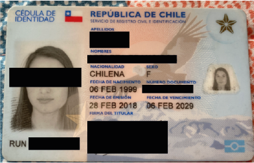

Datos personales
Documento de Identificación
- Deberás presentar tu cédula de identidad.
-
Si eres extranjero los documentos admitidos son:
- Comprobante de envío de solicitud de visa definitiva en trámite.
- Ampliación de Visa definitiva en Trámite.
- Solicitud de Prórroga de Visa.
- Solicitud de Residencia Definitiva en Trámite.
- Certificado Residencia Definitiva en Trámite.
- Estampado electrónico.
- Puedes descargarlo desde la página de extranjería, ingresando AQUÍ

Certificado de antecedentes penales
- Ingresa aquí con tu clave única del registro civil podrás descargar tu certificado de antecedentes penales.
¿Cómo tramito la clave única para gestionar el certificado?
Puedes tramitarlo de cualquiera de las siguientes formas:
- Vía telemática: agenda una videollamada a través del siguiente link. Una hora antes de la cita recibirás un e-mail con el link para conectarte. Debes tener tu cédula de identidad y sólo debe ser realizada por el titular.
- De forma presencial: en cualquier oficina del Servicio de Registro Civil e Identificación o de la red ChileAtiende, solicitándola en el mesón de atención presentando tu cédula de identidad vigente.